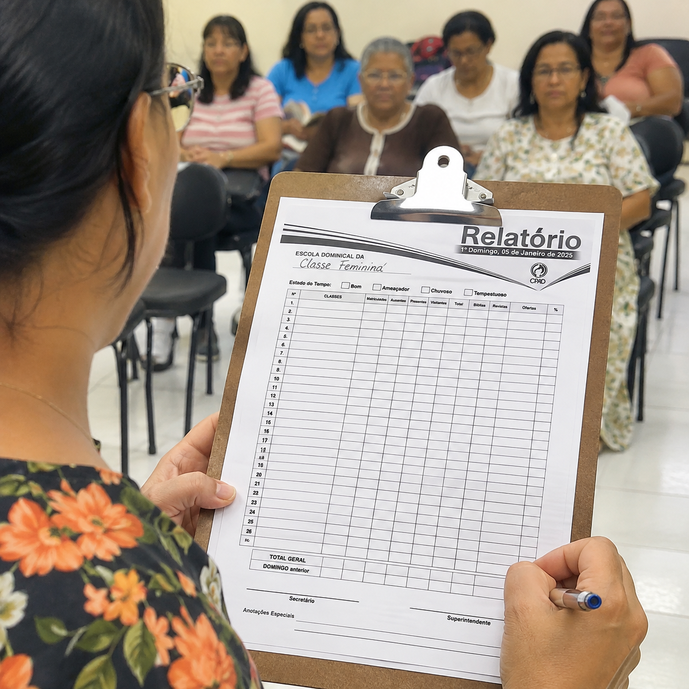
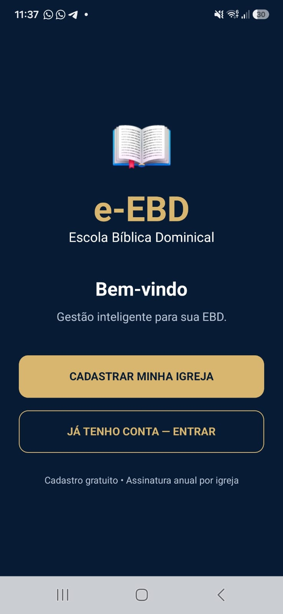
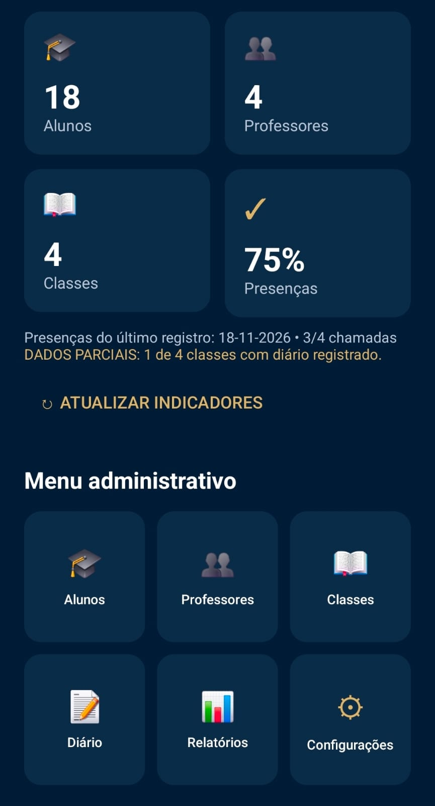

VÍDEO 01
Cadastro Inicial da Igreja
Aprenda como realizar o cadastro inicial da sua igreja no aplicativo e_EBD.
“Servi uns aos outros, cada um conforme o dom que recebeu, como bons despenseiros da multiforme graça de Deus.” 1 Pedro 4:10
Sua Escola Bíblica Dominical merece mais praticidade, organização e tecnologia.

Preenchimento manual de chamadas e relatórios.
Chamada pelo celular de forma prática e rápida.
Administre sua Escola Bíblica Dominical com uma assinatura anual simples, acessível e organizada.
↓ OFERTA ESPECIAL DE LANÇAMENTO ↓
De R$ 700,00 por apenas
APROVEITE ANTES DE FINALIZAR O ANO!
✓ Acesso a todas as funções do App e_EBD
Os professores não precisam contratar assinaturas individuais.
Veja os vídeos e descubra como usar o APP e-EBD.
Aprenda como realizar o cadastro inicial da sua igreja no aplicativo e_EBD.
Aprenda como cadastrar professores e conceder acesso ao aplicativo e_EBD para o gerenciamento das classes da Escola Bíblica Dominical.
Veja como acessar a classe, matricular alunos, realizar chamadas e preencher o diário dominical.
Veja como gerar e imprimir os relatórios da Escola Bíblica Dominical diretamente pelo aplicativo e_EBD.
Conheça as principais telas do ao App da sua Igreja.




Encontre respostas para as principais dúvidas sobre o aplicativo e_EBD.
Não. A assinatura é por igreja. Todos os professores autorizados podem utilizar o aplicativo sem pagar assinaturas individuais.
O valor da assinatura é de R$ 300,00 por ano, por igreja.
Não. O professor utiliza o acesso autorizado pelo superintendente da igreja.
Sim. O e_EBD permite organizar diferentes classes, cadastrar alunos e acompanhar os registros de cada turma.
O responsável realiza o cadastro da igreja. Após a confirmação do pagamento da assinatura anual, o acesso às funcionalidades é liberado.
Sim. O superintendente possui acesso à visão consolidada das classes, com indicadores e relatórios da igreja.
O e_EBD utiliza Kotlin com Jetpack Compose no aplicativo Android, Python com FastAPI no backend e PostgreSQL como banco de dados. A comunicação ocorre por meio de uma API REST.
Ainda tem alguma dúvida?
Entre em contatoEm preparação para lançamento na Google Play.
Preencha o formulário para receber informações sobre nosso aplicativo.